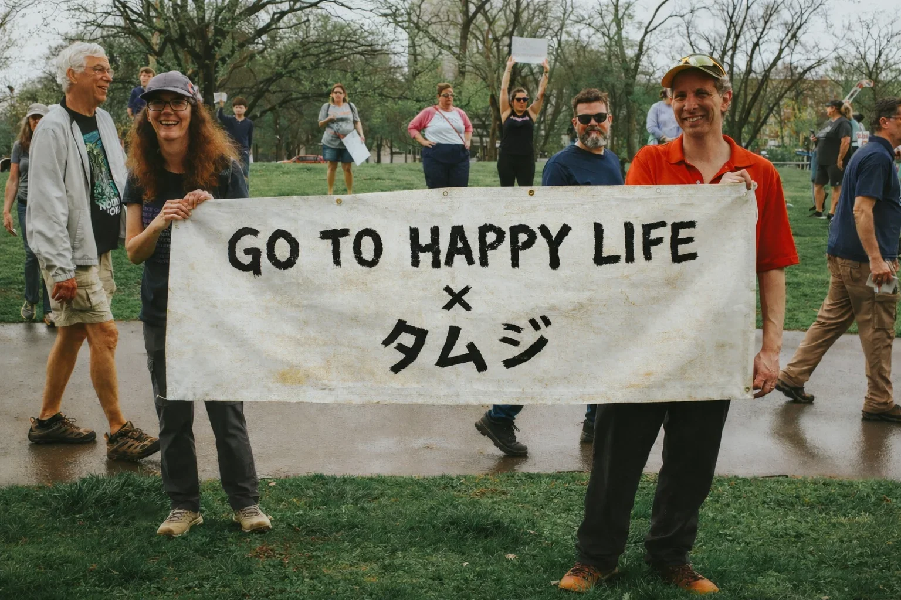

MISSION
GO TO HAPPY LIFE は
寄付を集める団体ではありません。
社会課題を、実際の事業として完成させるための公益プラットフォームです。
HOW WE WORK
01
寄付を、直接受け取る
GO TO HAPPY LIFE は NPO として寄付を受け取ります。中間業者は存在しません。あなたの支援は、そのまま団体の口座へ届きます。

02
パートナーと、企画する
プロジェクトの企画・運営は TAmJ 株式会社が担当します。公益・事業・現場、それぞれの専門を持つ連携先と組むことで、支援を事業として完成させます。
03
医療・福祉の現場で、実装する
プロジェクトは医療・福祉の実行パートナーとともに現場で実装されます。寄付が集まった瞬間をゴールにしません。完成させるところまでが、私たちの仕事です。